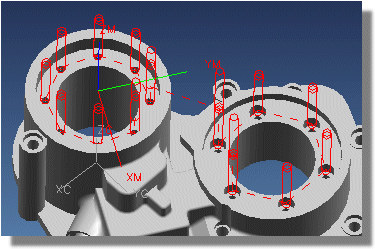
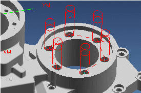
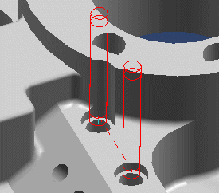

Functions used for the drilling project
In this project you will:
-
Spot drill, drill, and counterbore the eleven 0.350 diameter holes.

-
Spot drill and drill the fourteen 0.250 diameter holes.

-
Create six 0.500 counterbores.

-
Spot drill, drill, and counterbore the two 0.375 diameter holes.

-
Spot drill and drill the two 0.300 diameter holes.

-
Spot drill, bore, counterbore, and ream the 0.750 diameter hole.